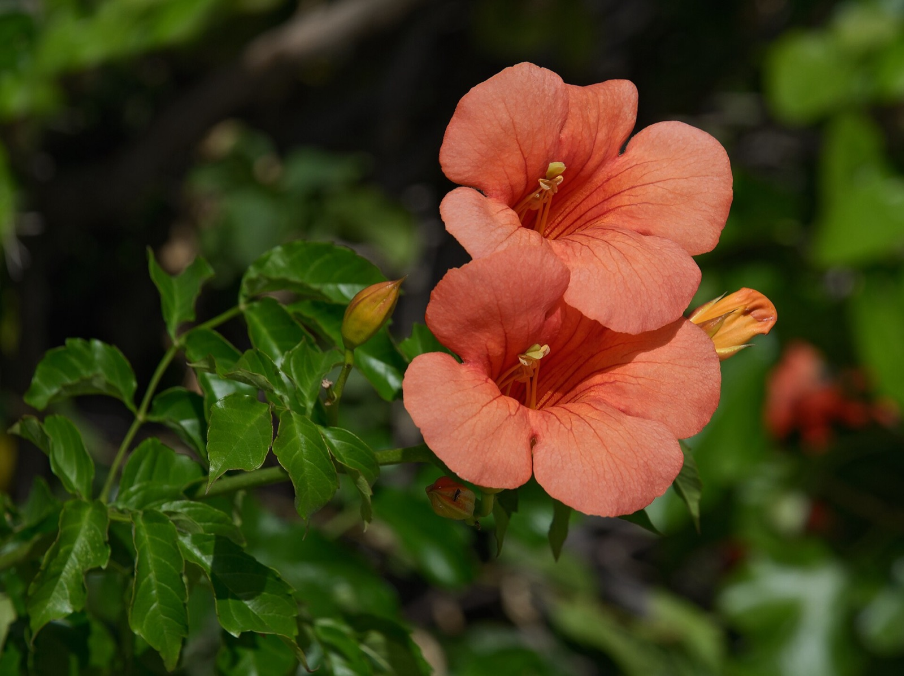

능소화 꽃가루가 눈에 들어가면 실명할까? — 현미경으로 확인한 소문의 진실
"능소화 꽃가루가 눈에 들어가면 실명한대."
여름이면 능소화가 담장과 아파트 벽을 타고 핍니다. 주황빛 나팔 모양 꽃입니다. 사람들은 이 꽃 곁에서 늘 같은 경고를 합니다. 만지지 마라, 눈 비비지 마라, 꽃가루가 들어가면 눈이 먼다.

2014년 여름, 한 식당 앞에 떨어진 능소화를 아이들이 주워 오자 종업원이 꽃가루가 눈에 들어가면 실명한다고 말했다는 보도가 있었습니다[1]. 같은 해 능소화가 많은 서울의 일부 아파트와 한옥 마을에서는 나무를 모두 뽑아야 하는 것 아니냐는 이야기까지 나왔습니다[2].
현미경으로 들여다본 능소화 꽃가루에는, 소문 속의 갈고리가 없었습니다.
이 글은 능소화 앞에서 아이 손을 잡아끌어 본 분들을 위해 씁니다. 능소화 꽃가루로 실명한 사례를 찾은 사람은 아직 없습니다. 2015년 국립수목원의 조사는 소문이 기댄 '갈고리 모양 꽃가루'부터 사실이 아님을 보였습니다. 다만 아무 걱정 없는 꽃이라고 말하기에도 이릅니다. 그 경계를 원 자료로 짚습니다.
소문은 어디서 왔나
소문에는 근거라고 내세울 만한 책이 있었습니다. 2014년 YTN 보도는 한 야생화 도감의 문장을 이렇게 전합니다.
꽃가루를 현미경으로 보면 갈고리와 같은 것이 있기 때문에 어린이 눈에 들어가지 않도록 주의해야 한다. 어린이와 노약자가 있는 집은 키우는 것을 삼가야 한다.
— 한 야생화 도감의 서술, YTN 보도(2014-07-15)에서 재인용[2]
이듬해 산림청이 낸 보도자료도 같은 계열의 서술을 소개합니다. 일부 문헌은 능소화 꽃가루의 미세 구조가 갈고리 모양이라고 썼습니다. 그래서 피부나 점막에 닿으면 잘 떨어지지 않고 염증을 일으키며, 눈에 들어가면 결막염이나 백내장이 생길 수 있다고 했습니다. 산림청은 이 서술 때문에 논란이 이어져 왔다고 설명합니다[3].
눈여겨볼 대목이 있습니다. 책이 경고한 것은 결막염과 백내장이었습니다. 그 경고가 인터넷을 거치며 '실명'으로 바뀌었습니다. 산림청과 언론은 이 논란이 온라인을 통해 퍼졌다고 적었습니다[3][1]. 그리고 그 책들이 말한 '갈고리'를 실제로 확인한 사람은 그때까지 없었습니다. 조사 전인 2014년에는 산림청 관계자조차 이 꽃가루 표면에 가시 같은 돌기가 있다고 말했다는 보도가 나왔습니다[1].
현미경으로 들여다보니
국립수목원 연구팀은 능소화 꽃가루를 주사전자현미경으로 들여다봤습니다. 연구팀이 2015년 6월 학술지 『환경생물』에 실은 논문에 따르면, 꽃가루는 지름 21.8㎛ 정도의 중간 크기였고 겉껍질은 매끈한 그물무늬였습니다. 바깥으로 튀어나온 돌기는 없었습니다. 연구팀은 이 결과가 각막을 다치게 하는 갈고리 모양 돌기가 있다는 '소문'과 어긋난다고 분명히 적었습니다[4].
21.8㎛는 0.0218㎜입니다. 산림청은 이 결과를 두고, 능소화 꽃가루가 사람 눈에 들어갈 확률이 낮고 들어간다 해도 피부나 망막을 손상시키는 형태적 구조가 아니라고 정리했습니다[3].
벌이 나르는 꽃가루
꽃가루가 눈에 들어가려면 먼저 공기 중에 떠다녀야 합니다. 그런데 능소화 꽃가루는 공기 중에 잘 떠다니지 않습니다. 산림청에 따르면 꽃가루 알레르기는 대부분 바람에 꽃가루를 날려 보내는 풍매화가 일으킵니다. 능소화는 꿀벌, 뒤영벌, 호랑나비 같은 곤충이 꽃가루를 옮기는 충매화입니다. 매끈한 그물무늬 꽃가루 역시 바람에 날리기 어려운 조건입니다[3].
그렇다고 아무 걱정 없는 꽃은 아니다
여기서 '능소화는 완전히 무해하다'로 넘어가면 또 다른 과장이 됩니다. 같은 조사에서 연구팀은 꽃, 잎, 줄기 추출물을 세포에 24시간 처리했습니다. 모든 농도에서 세포의 99% 넘게 살아남았습니다. 독성이 거의 없었습니다. 하지만 꽃의 꿀은 48시간 넘게 처리하자 일부 세포독성을 보였습니다. 산림청은 그래서 오래된 꿀을 먹거나 피부에 오래 닿게 하는 것은 조심하라고 권했습니다[3].
연구팀은 이 시험을 실험실의 세포로 했습니다. 사람의 눈으로 시험하지는 않았습니다[4]. 눈에 대해서는 안과 전문의의 설명이 현실적입니다. 꽃가루 묻은 손으로 눈을 비비면 각막에 상처가 날 수는 있지만 실명까지 이를 정도는 아니고, 그런 위험은 다른 꽃가루도 마찬가지라는 것입니다. 당시 국립수목원장도 지금까지 능소화 꽃가루 때문에 실명한 사례는 한 건도 없다고 말했습니다[2].
능소화는 만진 뒤 손을 씻으면 되는 꽃입니다. 아이에게 꽃을 아예 멀리하게 할 필요는 없습니다.
필자 한마디
능소화 앞에서 아이를 멀찍이 떼어 놓았던 분들을 탓할 일은 아닙니다. 도감까지 그렇게 썼습니다.
"책에 나온 경고도 누군가 확인한 사실은 아닐 수 있습니다." 사람들은 능소화의 갈고리를 아무도 들여다보지 않은 채 오랫동안 전했습니다. 연구팀이 현미경으로 한 번 들여다보자 그 이야기는 근거를 잃었습니다.
올여름 담장의 능소화는 가까이서 들여다봐도 됩니다.
'능소화 꽃가루가 눈에 들어가면 실명한다'는 말은 일부 문헌의 서술에서 나왔습니다. 문헌은 갈고리 모양 꽃가루가 결막염과 백내장을 일으킨다고 썼고, 그 서술이 인터넷을 거치며 부풀었습니다. 2015년 국립수목원의 현미경 조사에서 능소화 꽃가루는 돌기 없는 매끈한 그물무늬였습니다. 능소화는 곤충이 꽃가루를 옮기는 꽃이라 꽃가루가 공기 중에 잘 날리지 않습니다. 실명 사례는 없습니다. 남는 주의는 손 씻기와 오래된 꿀 피하기 정도입니다.
'그거 위험하대'라는 말을 들으면 누가 그것을 들여다보고 확인했는지부터 물어야 합니다.
참고문헌
- 우원애. 능소화 꽃가루, 실명 초래?..진실은? 이데일리, 2014-07-15 (연합뉴스 인용). 링크 ↩
- YTN. "능소화 꽃가루가 실명 초래?...사례는 없다", 2014-07-15. 링크 ↩
- 산림청. 능소화 꽃가루, 눈에 들어가도 실명 위험 없어(보도자료, 국립수목원 연구), 2015-07-10. 링크 ↩
- 김현준, 소순구, 신창호, 노혜지, 나천수, 이유미. 도심 벽면녹화식물 능소화(Campsis grandiflora K. Schum)의 화분 형태 및 세포독성에 근거한 유해성평가. 환경생물 33(2): 256–261, 2015. 링크 ↩